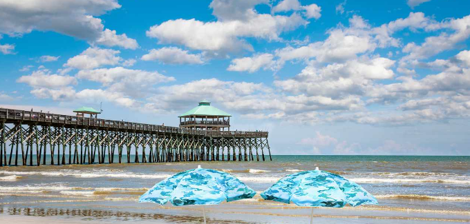
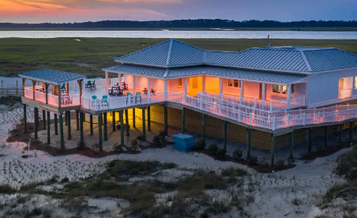
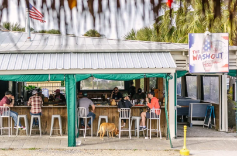
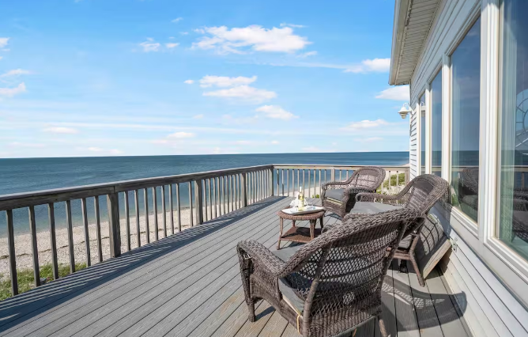

Folly is the laid-back beach for a Charleston bach trip. It's a surf town about 12 miles from downtown, roughly a 20 to 25 minute drive, where flip-flops count as dinner shoes and Center Street ends right at the pier. Rent a house a few blocks from the strip and the whole weekend is walkable: beach, tacos, rooftop drinks and the walk home.
The days belong to the sand and the river, and the nights belong to Center Street. Below is how to split them, plus the house rules for the island that tend to surprise visiting groups.

Three Bookings That Make the Folly Weekend
Most of Folly is walk-up and casual. These three need a reservation, so lock them in first.
The best stretch of sand for a big group is Folly Beach County Park at 1100 W Ashley Ave, on the west end of the island. It has wide beach, restrooms and showers at the Dunes House, seasonal lifeguards and the shell-covered Wish Tree for photos. Entry costs a fee, and the lot fills by about 10:30 on weekends, so get there early. At low tide, walk around the bend for more room. Stay through the evening, because the upper deck of the Dunes House is one of the island's best sunset spots.

Wide sand and room to spread out at the county park.
Back in the middle of town, the Folly Beach Pier stretches more than 1,000 feet into the Atlantic from the end of Center Street. It's the easiest group photo on the island at golden hour. Pier 101 sits at its base with an open-air bar, and drinks bought there can be carried out onto the pier, the one legal way to sip by the ocean.
Between beach sessions, browse the surf shops and boutiques on Center Street. McKevlin's Surf Shop has been open since 1965, and the giant fiberglass shark head near City Hall is a must for group photos. For a boat day, head into Charleston, where the harbor cruises on our main guide run most of the day.
Center Street Food and Night Out
Start the morning at Lost Dog Cafe on W Huron Ave. It's the island's breakfast institution, with big plates, a shady patio and a wait on Saturdays. For lunch, Chico Feo on E Ashley Ave serves tacos, rice bowls and ramen at picnic tables, often with live music. It's outdoors only, so it closes in the rain. On a gray day, Loggerhead's Beach Grill has a big deck plus indoor seating. Stock the house at Bert's Market, the 24-hour grocery a block off the beach, and grab frozen yogurt or boba at Dolce Banana.

Rooftop drinks on Center Street.
At night the strip does the work. Start with a rooftop round at Catch 23, the sushi and seafood spot at 10 Center St (in the old Snapper Jack's building), then head to Taco Boy on E Ashley Ave for tacos and frozen margaritas. For dinner, Jack of Cups Saloon at 34 Center St is the local favorite, with global comfort food, curries, plenty of vegetarian dishes and a back courtyard. Rita's Seaside Grille is the easy sit-down near the pier, with weekend brunch too. End in the beer garden at St. James Gate, an Irish pub with 22 taps and live music upstairs. All of it is a few blocks apart, so rideshare only for the trip home.
Every pick here is our own, and no business pays to be listed. More mainland meals are in our Charleston restaurant guide.
Houses and Hotels Near the Strip
A house within a few blocks of Center Street is the move, ideally with a big porch and enough beds for everyone. Read the house rules before booking. Many Folly listings ban parties, the city enforces a 10pm to 8am noise ordinance, and some summer rentals only book by the week. Tell the host it's a bachelorette group up front.

The porch is where half the weekend happens.
Groups that would rather have separate rooms can book Tides Folly Beach at 1 Center St, the island's only full-service oceanfront hotel. It sits next to the pier, every room has a balcony facing the ocean, and there's an oceanfront pool and beach bar. The minimum check-in age is 21, so make sure the right person books. Splitting the trip with downtown? Our main Charleston guide covers peninsula stays.
One Folly Day, Start to Finish
Do the outdoor stuff while it's light and the carts are legal, then Center Street after dark.
Morning
Breakfast at Lost Dog, then a surf lesson or chairs at the county park before the lot fills.
Lunch
Chico Feo if the sun's out, Loggerhead's if it isn't.
Afternoon
Paddle the Folly River, browse Center Street, and return golf carts before sunset.
Golden Hour
Drinks from Pier 101 out on the pier for group photos, or sunset from the Dunes House deck.
Night
Dinner at Jack of Cups, the rooftop at Catch 23, then the beer garden at St. James Gate. Rideshare back.
Folly Rules Worth Knowing
On the Sand
No alcohol: that includes opened drinks in cups. No glass of any kind either.
No balloons: plastic bags and Styrofoam are banned as well. Bring fabric banners instead of a balloon arch.
No smoking or vaping: this covers the sand too. Open fires and fireworks are also out.
Pack it up at sunset: tents, coolers and umbrellas left behind can be removed.
Golf Carts
Stickers required: rentals need SC DMV and City of Folly Beach stickers.
Drivers: must be 16 or older, with a license and proof of insurance.
Center Street and Folly Road: carts can cross them but can't drive on them.
Daylight only: no driving at night, in the rain or in low visibility.
Surfing and Parking
Surf zones: from May 15 to Sept 15, no surfing between 2nd Street East and 3rd Street West from 10am to 6pm. Surfing within 200 feet of the pier is never allowed.
Parking: all four tires off the pavement, facing with traffic, and clear of yellow curbs, dunes and crosswalks.
Nights out: plan a rideshare, especially after drinking.
These rules come from the City of Folly Beach and can change. Check the city's site before the trip.
The best Folly weekends are the ones where nobody has to drive. Book the house near the strip, lock in the lesson or the paddle, and let the pier and the rooftops take care of the rest. Know a Folly spot we missed? Send it our way.